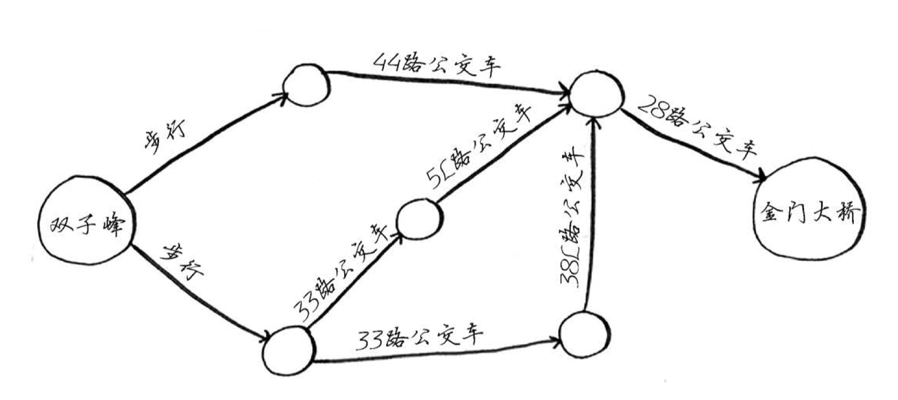
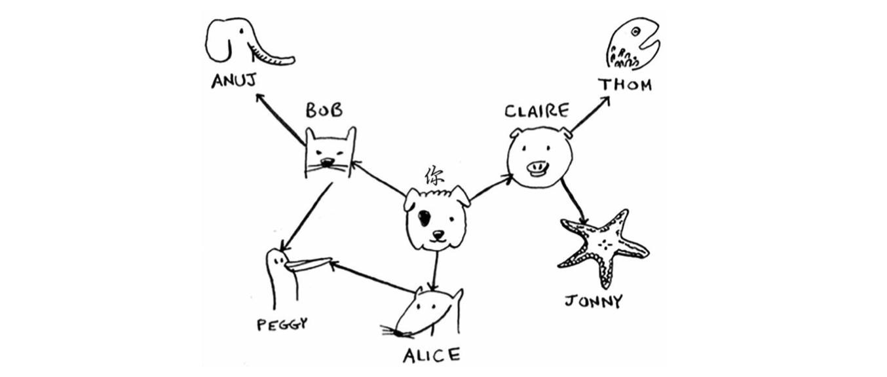
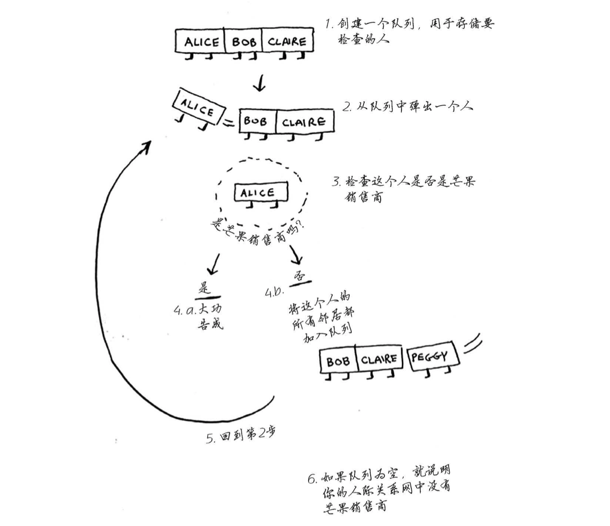

广度优先搜索
本文是《算法图解》的简单理解与记录，没什么深度，大佬请略过。

首先，上图这种类型的结构就叫做图。我们经过简单的思考可以发现，从双子峰到金门大桥有三条路线，最短路径需要三步。这种寻找最短的路径的问题被称为最短路径问题（shorterst-path problem）。解决最短路径问题的算法被称为广度优先搜索。
广度优先搜索是一种用于图的查找算法，可帮助回答两类问题。
- 第一类问题：从节点A出发，有前往节点B的路径吗？
- 第二类问题：从节点A出发，前往节点B的哪条路径最短？
实现图
使用代码来实现图，图由多个节点组成。我们可以使用散列表来表示图的关系。散列表将键值（keys）映射到值（values）

表示这种映射关系的Python代码如下：
1 | graph = {} |
Anuj、Peggy、Thom和Jonny都没有邻居，这是因为虽然有指向他们的箭头，但没有从他们 出发指向其他人的箭头。这被称为有向图（directed graph），其中的关系是单向的。因此，Anuj 是Bob的邻居，但Bob不是Anuj的邻居。无向图（undirected graph）没有箭头，直接相连的节点互 为邻居。
实现算法

首先创建一个队列。在Python中，可以使用函数deque来创建一个双端队列。
1 | form collections import deque |
Peggy既是Alice的朋友又是Bob的朋友，因此她将被加入队列两次：一次是在添加Alice的朋 友时，另一次是在添加Bob的朋友时。因此，搜索队列将包含两个Peggy。但你只需检查Peggy一次，看她是不是芒果销售商。如果你检查两次，就做了无用功。因此，检查完一个人后，应将其标记为已检查，且不再检查他。
假设你的人际关系网类似于下面这样，如果不这样做，就可能会导致无限循环。
考虑到这一点后，广度优先搜索的最终代码如下。
1 | def search(name): |
小结
广度优先搜索指出是否有从A到B的路径。
如果有，广度优先搜索将找出最短路径。、
面临类似于寻找最短路径的问题时，可尝试使用图来建立模型，再使用广度优先搜索来解决问题。
有向图中的边为箭头，箭头的方向指定了关系的方向，例如，rama→adit表示rama欠adit钱。
无向图中的边不带箭头，其中的关系是双向的，例如，ross - rachel表示“ross与rachel约会，而rachel也与ross约会”。
队列是先进先出（FIFO）的。
栈是后进先出（LIFO）的。
你需要按加入顺序检查搜索列表中的人，否则找到的就不是最短路径，因此搜索列表必须是队列。
对于检查过的人，务必不要再去检查，否则可能导致无限循环。
参考资料
- 《算法图解》